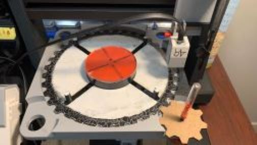

In the ME101 course, which is our second concept and design course in mechanical engineering, we must build and program a robot using the Lego EV3 kit. In groups of four we must come up with a problem or need that can be solved by the project.

In the ME101 course, which is our second concept and design course in mechanical engineering, we must build and program a robot using the Lego EV3 kit. In groups of four we must come up with a problem or need that can be solved by the project.
The pizza player is what me and my group decided to start creating. This robot introduces a mechanism that will make cutting slices of pizza one step ahead. It creates different markings (shaped as slices) all around the pizza to facilitate cutting slices for users (as a prototype). However, this idea can be furthered by adding a blade instead of marker.
All parts for the robot were either 3D modeled and printed with PLA or made in AutoCad (2D) and then lasercut. The Pizza player uses the lego EV3 kit which is programmable using RobotC. The kit provided all the motors, cables, the interactive lego block and sensors allowing the robot to function properly.
After multiple iterations and finding different ways for the robot to complete it's tasks ,here is the process it goes through. First the user selects the number of desired slices using the lego block and it's arrows. Then when the process starts the pizza is centered using the pegs. By using a gear ratio the bottom plate rotates at given angles to start the markings. The beam which has an attached motor with the color sensor and our eyeliner that opens by being rotated goes accross back and forth marking the pizza. When the proces is over, the arm goes to the edge completing the Pizza Players job.